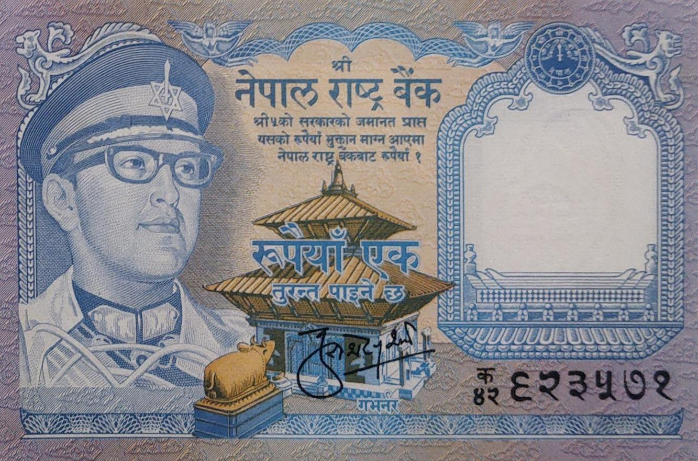
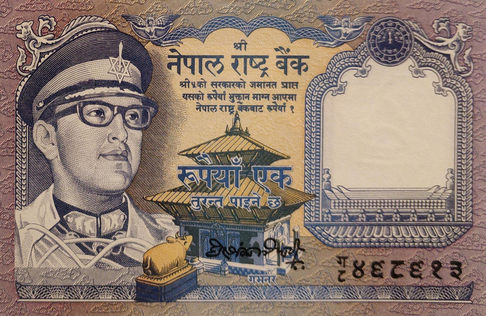
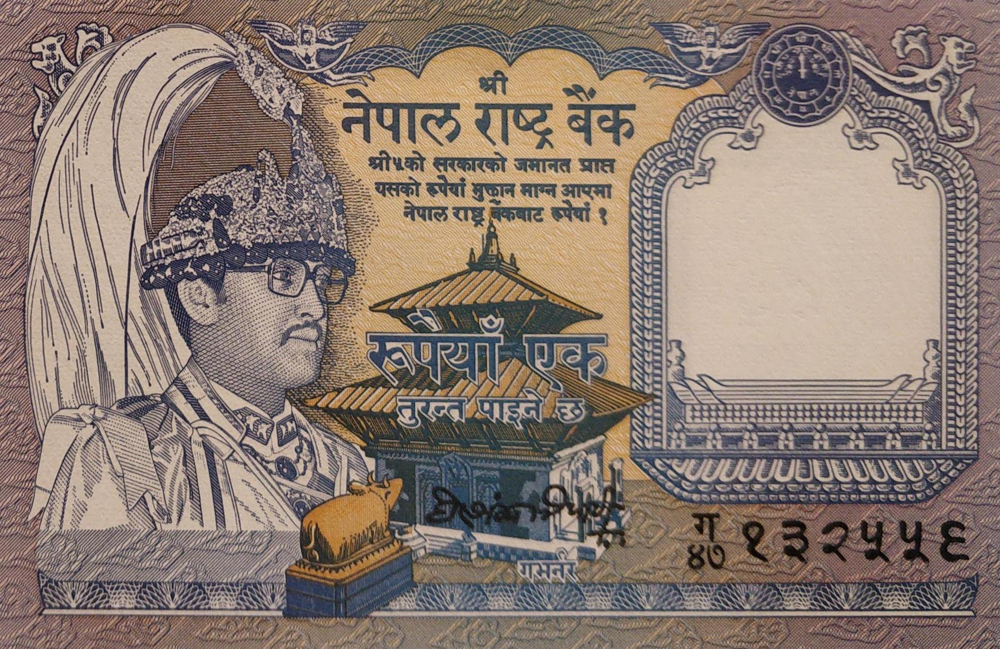

Kul Shekhar Sharma (April 29, 1973 to December 12, 1978)
Kalyana Bikram Adhikari (June 13, 1979 to December 08, 1984)
Ganesh Bahadur Thapa (March 25, 1985 to May 25, 1990)

Hari Shankar Tripathi (August 10, 1990 to Jan 17, 1995)


Hari Shankar Tripathi (August 10, 1990 to Jan 17, 1995)
Satyendra Pyara Shrestha (Jan 18, 1995 to Jan 17, 2000)
- Domination: Rupees 1
- Signature:
- Issued date: Between 1974 to 1999
- Front: Portrait of King Birendra & Pashupatinath Temple
- Back: Mt. Ama Dablam & a couple of Himalayan Musk deer
- Watermark: Plumed crown
- Size: 107 x 70mm
Facts:
- 6-Kul Shekhar Sharma
- 7-Kalyana Bikram Adhikari
- 8-Ganesh Bahadur Thapa
- 9-Hari Shankar Tripathi
- 10-Satyendra Pyara Shrestha